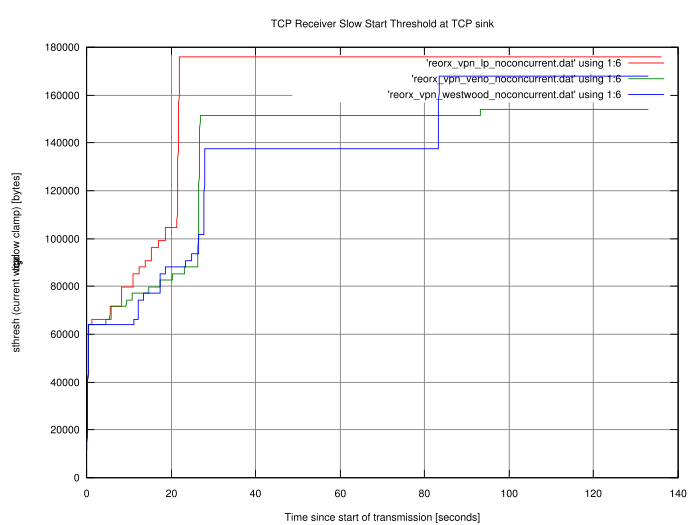
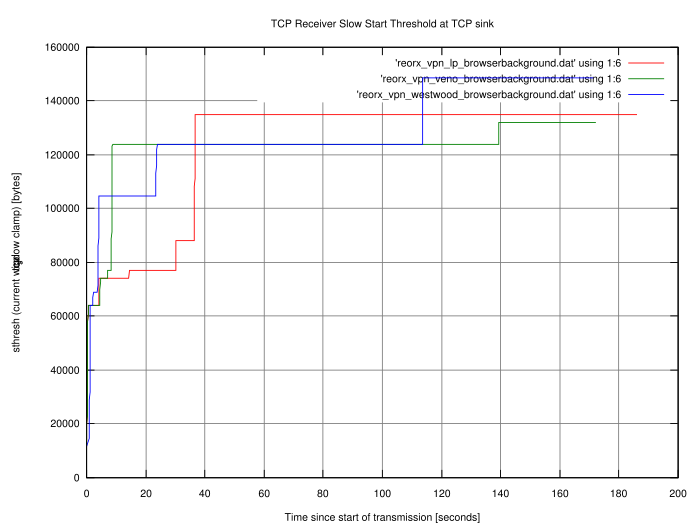

...making Linux just a little more fun!
Last month, I introduced the various TCP congestion control algorithms your Linux kernel knows about. I also mentioned a method, using the kernel module tcpprobe, that allows for measuring the parameters of live TCP connections. Unfortunately, this module requires the presence of a debugging option in the kernel called kprobes. By enabling this, you can dynamically break into any kernel routine and collect debugging and performance information non-disruptively. This sounded good on first impression - but I decided that I don't wish to introduce kprobes on every machine I have; it's better to run less code on servers. Besides, it is not a good idea to run debugging code in kernels that shouldn't be used for debugging. I had to look for other mechanisms. After rediscovering the man pages on my GNU/Linux workstation at home, I found what I was looking for: getsockopt()
The Linux kernel has internal data structures that keep track of active TCP connections and their parameters. This is required, since most TCP connections have a long lifetime (long being tens of seconds, minutes, or even hours). The longer a connection lasts, the more changes on its path can happen. Other TCP connections might throttle the up- or downlink. The link might get disconnected, rerouted, or re-established. Packets might be lost or reordered. All these things have an impact on the TCP performance, and TCP usually reacts by changing its window size (among other things we won't look at right now.) Inside an application that owns a network socket with a live TCP connection, we can always request the current TCP parameters. The man pages of getsockopt() and tcp tell us how to do this - calling getsockopt() with the TCP_INFO option fills a memory structure with information described in struct tcp_info, which is defined in /usr/include/netinet/tcp.h. That's great - just what we're looking for! But how do we collect this information periodically while sending or receiving data?
The man pages refer to C structures and C function calls. I did a lot of C programming on my Amigas, so I decided to dust off my C skills. Since the kernel is written in C, and the GNU C Library has everything prepared, the way to get to our TCP parameters is straightforward.
Right. This sounds quite complete. By adjusting n, you can determine how many samples you get. It doesn't make sense to take multiple samples per TCP packet, which means that you should choose n above the Maximum Transfer Unit (MTU) on your connection path. Besides, if you send streams over the network that contain many megabytes (or even gigabytes), you might want to reduce the sample rate anyway.
We design our code so it can be used as a "TCP sink". We don't want to store all the bytes we read from the network. We just need to fill a buffer up to a maximum of n bytes, look at the TCP parameters, and read the next n bytes. The only things we probably want to save are the parameters. Everything else is fed to the bit bucket.
Let's look at the steps of our strategy with more detail and some code. I am going to describe the task "codewise", line by line. You will get a complete sample of the source to play with, at the end. First, we have to prepare the socket. Then, we have to bind it to a local address. Finally, we have to put the socket into the TCP LISTEN state.
tcp_socket = socket( PF_INET, SOCK_STREAM, IPPROTO_TCP );
if ( tcp_socket == -1 ) {
/* Could not open socket. */
fprintf(stderr,"Could not open TCP socket: %s\n",strerror(errno));
exit(EXIT_FAILURE);
}
else {
/* Bind to any address on local machine */
server_address.sin_family = AF_INET;
server_address.sin_addr.s_addr = INADDR_ANY;
server_address.sin_port = htons(opt_port);
memset((void *)&(server_address.sin_zero), '\0', 8);
status = bind( tcp_socket, (struct sockaddr *)&server_address, sizeof(server_address) );
if ( status == 0 ) {
/* We can now listen for incoming connections. We only allow a backlog of one
* connection
*/
status = listen( tcp_socket, 1 );
if ( status != 0 ) {
/* Cannot listen on socket. */
fprintf(stderr,"Cannot listen on socket: %s\n",strerror(errno));
exit(EXIT_FAILURE);
}
}
else {
/* Cannot bind to socket. */
fprintf(stderr,"Cannot bind to socket: %s\n",strerror(errno));
exit(EXIT_FAILURE);
}
}
The call to socket() specifies that we'd like to have an Internet (PF_INET) stream socket (SOCK_STREAM) that speaks TCP (IPPROTO_TCP). Provided the call succeeds, we prepare a data structure named server_address of the type struct sockaddr_in, which tells the kernel the address and the port to which we wish to bind the socket. We choose all available addresses by using INADDR_ANY, and we'd like to bind on the port stored in the opt_port variable. (The full source handles the options; I left it out in this piece of code.) Be careful when doing network programming! Addresses and ports have a defined network and host byte order. This means that certain bytes might need to be swapped - or not - before putting them from the host side into network data structures and vice-versa. The function htons() converts the unsigned short integer TCP port from host byte order to network byte order. If you look up its man page, you will see that there are other functions for byte order conversion.
Now we can call the bind() function. We need to provide the TCP socket it should act on, and a pointer to a memory region of type struct sockaddr, along with the length of the memory region. server_address is the structure we filled for exactly these purposes. The function call may seem a bit complicated because of the pointer and the size of the structure - but as long as we make sure that the content of server_address is filled with correct values, bind() won't choke on it.
If the binding succeeds, we can put the socket into the listening state. This is done by a simple call to the listen() function. When listening for connections, you can tell the kernel how many connections it should keep in the queue for processing. As of kernel 2.2, this queue consists of completely established sockets waiting to be accepted. Since we don't need to deal with performance issues and multiple connections, we choose 1; we'll let other people worry about the design of a high-performance and multi-threaded TCP sink. After these three steps, our code is ready to accept and process data streams.
client_length = sizeof(client_address); tcp_work_socket = accept( tcp_socket, (struct sockaddr *)&client_address, &client_length );
The call to accept() makes our code wait until a connection is received. client_address is of the same type as server_address was, earlier. It is a storage space for the address of the client that is talking to us. accept() fills out the details as soon as a client connects. In addition, the function returns an identifier of the socket that holds the conversation with our client. Keep in mind that our listening socket will always listen for incoming connections! Every connection we accept creates a new socket; that's why we use the variable tcp_work_socket for this. All we need to do now is to read incoming data. (We could also write "to the other side" and test bidirectional data flow, if we wanted to.)
Our little strategy above missed (or implied, as a matter of perspective) a crucial point. Sampling the TCP parameters is fine, but we need to take another reference as well. We need something that says "we got the parameters at a certain time or at a certain point". This means we have to measure the time elapsed since the connection started. We could use the number of bytes received, but usually it is better to use the elapsed time. Measuring time in C on various platforms deserves an article on its own; fortunately we are bound to Linux (because we want to use the TCP_INFO option of getsockopt(), and this is not portable), and can expect to get time resolution in microseconds. In order to make time management easier, we define two functions: get_now() and time_to_seconds().
/* Get current time. */
void get_now( struct timeval *time, unsigned short debug ) {
if ( gettimeofday( time, NULL ) != 0 ) {
fprintf(stderr,"Can't get current time.\n");
}
return;
}
/* Convert "struct timeval" to fractional seconds. */
double time_to_seconds ( struct timeval *tstart, struct timeval *tfinish ) {
double t;
t = (tfinish->tv_sec - tstart->tv_sec) + (tfinish->tv_usec - tstart->tv_usec) / 1e6;
return t;
}
get_now() is our stopwatch button, and retrieves the current time by calling gettimeofday() and storing it into a memory structure. The second function time_to_seconds() calculates the difference of two time value structures, and converts it into fractional seconds. We have to do that ourselves, since the GNU C Library doesn't provide any functions to do fancy date and time calculations. Other libraries could help us out, but I'd like to stick to basic methods and basic tools. We have other things to do in our code than to worry about fancy functions. You may have noticed the slightly unused function parameter debug in get_now(). I'll explain later what it is for (it's a feature, not a bug).
Now, we start our main loop. We take the time, read the stream buffer by buffer, query the socket and write the parameters to a file. Here's the code.
get_now( &time_start, opt_debug );
while ( (recv_bytes = recv( tcp_work_socket, tcp_buffer, opt_buffer, 0 ) ) > 0 ) {
/* Measure time in order to create time intervals. */
get_now( &time_now, opt_debug );
/* Fill tcp_info structure with data */
tcp_info_length = sizeof(tcp_info);
if ( getsockopt( tcp_work_socket, SOL_TCP, TCP_INFO, (void *)&tcp_info, &tcp_info_length ) == 0 ) {
fprintf(statistics,"%.6f %u %u %u %u %u %u %u %u %u %u %u %u\n",
time_to_seconds( &time_start, &time_now ),
tcp_info.tcpi_last_data_sent,
tcp_info.tcpi_last_data_recv,
tcp_info.tcpi_snd_cwnd,
tcp_info.tcpi_snd_ssthresh,
tcp_info.tcpi_rcv_ssthresh,
tcp_info.tcpi_rtt,
tcp_info.tcpi_rttvar,
tcp_info.tcpi_unacked,
tcp_info.tcpi_sacked,
tcp_info.tcpi_lost,
tcp_info.tcpi_retrans,
tcp_info.tcpi_fackets
);
if ( fflush(statistics) != 0 ) {
fprintf(stderr, "Cannot flush buffers: %s\n", strerror(errno) );
}
}
}
close(tcp_work_socket);
First, we take the time to mark the start of the transmission. It gets stored in time_start, which we use later for calculating relative time. The while loop is our main loop. We call recv(), and fill our buffer tcp_buffer with a maximum of opt_buffer bytes. After the buffer is full, we take the time again. Finally, we call the function getsockopt() and request that a memory region of type struct tcp_info be filled with parameter data from the live stream. The function works in a fashion similar to that of bind(). You have to have a piece of memory ready, indicate its size, give a request code (such as TCP_INFO), and getsockopt() will copy everything to the memory region indicated by the supplied pointer. If the function returns success, we can access the values in tcp_info. You can look up the content of a struct tcp_info structure by viewing /usr/include/netinet/tcp.h. For your convenience, I have a copy of the definition right here:
struct tcp_info
{
u_int8_t tcpi_state;
u_int8_t tcpi_ca_state;
u_int8_t tcpi_retransmits;
u_int8_t tcpi_probes;
u_int8_t tcpi_backoff;
u_int8_t tcpi_options;
u_int8_t tcpi_snd_wscale : 4, tcpi_rcv_wscale : 4;
u_int32_t tcpi_rto;
u_int32_t tcpi_ato;
u_int32_t tcpi_snd_mss;
u_int32_t tcpi_rcv_mss;
u_int32_t tcpi_unacked;
u_int32_t tcpi_sacked;
u_int32_t tcpi_lost;
u_int32_t tcpi_retrans;
u_int32_t tcpi_fackets;
/* Times. */
u_int32_t tcpi_last_data_sent;
u_int32_t tcpi_last_ack_sent; /* Not remembered, sorry. */
u_int32_t tcpi_last_data_recv;
u_int32_t tcpi_last_ack_recv;
/* Metrics. */
u_int32_t tcpi_pmtu;
u_int32_t tcpi_rcv_ssthresh;
u_int32_t tcpi_rtt;
u_int32_t tcpi_rttvar;
u_int32_t tcpi_snd_ssthresh;
u_int32_t tcpi_snd_cwnd;
u_int32_t tcpi_advmss;
u_int32_t tcpi_reordering;
};
The first part consists of administrative information such as state, retransmits, keepalive probes, and options. There's more, and I went through the Linux kernel code to discover where the values come from and what they mean. The best documentation you can get is to look at your kernel's source at /lib/modules/`uname -r`/build/net/ipv4/tcp.c and see how the tcp_info is filled. Look for the tcp_get_info() function inside, and look up the definition of struct tcp_sock in /lib/modules/`uname -r`/build/include/net/tcp.h. Most of the data is copied from this structure. Fortunately, we don't need everything. The main objective is to get the congestion window. If you look at the metrics section, you can see some interesting values. tcpi_rtt and tcpi_rttvar are the Round Trip Time (RTT), and its smoothed mean deviation maximum measured in microseconds. The values tcpi_rcv_ssthresh and tcpi_snd_ssthresh are the slow start size threshold for sending and receiving. Both can be changed dynamically during transmission and reception of data, and put limits on the window sizes. tcpi_snd_cwnd is the sending congestion window. tcpi_advmss is the advertised Maximum Segment Size (MSS). tcpi_reordering indicates the amount of reordering. (I didn't quite figure out the units and values used to indicate reordering, but I found that RFC 4737 defines a packet reordering metric; maybe it has something to do with it.)
We have to keep in mind that TCP can be used to transport data bidirectionally. Our TCP sink will only receive data. In this case, we should expect that only a part of the parameters will change. The values we want to extract are written to a file descriptor statistics by a call to fprintf(). The format string and the list of arguments defines what will be written to the statistics log file. You can select whatever values you want, and have a look at the output when shooting streams at our sink.
|
Category: Protocols
Data transmissions over networks create a wealth of aspects regarding performance and reliability. I am amazed by the efforts the kernel developers put into the code of the Linux TCP state machine. |
The whole source is a bit longer, since I wanted to build a daemon that listens on a socket, receives data, and adds all extracted statistics to a log file. It marks the start and the end of data connections, so that it is easier to parse the log and plot the results. I also added option parsing, which is better suited for changing port number, filename, and the like. The daemon has an option for the debug level as well: if the debug level is greater than 0, the daemon doesn't fork and prints debug messages to stdout and stderr in case something goes wrong. You can download the source tcpsnoop.c, a little header file tcpsnoop.h and a minimalistic Makefile. All you need is the GNU C Compiler and the make utility. After you have compiled the code (running make in the directory where you save the above files should do the trick), the binary's options are as follows.
luchs@nightfall:~$ ./tcpsnoop -h Usage: tcpsnoop [-d] [-D debuglevel] [-f filename] [-h] [-p tcpport] [-b buffersize] luchs@nightfall:~$
The presence of -d tells the program to enter daemon mode. -D sets the debug level. Setting a debug level will automatically disable daemon mode. -f lets you define a file to write to. -p determines the TCP port (default is 42237, can be changed by editing tcpsnoop.h). -b sets the size of the buffer (defaults to 1500 bytes). Daemon mode can be exited by sending a signal. My signal handlers could probably look a lot better, but feel free to turn the sample code into a mean and efficient piece of software.
Now let's see if it works or segfaults. We can test the program by using 127.0.0.1. This is a bit of a boring experience, since we have big bandwidth and minimal RTT. You'll see that the threshold for the receiving window will skyrocket very quickly. Anyway, we need a listener process. We issue the following command on the receiver:
luchs@receiver:~$ ./tcpsnoop -d -f /tmp/logfile.dat -p 23000 -b 4096
We listen on port 23000 for incoming connections, and write every 4096 bytes a line with the parameters of the connection to the file logfile.dat. Note that tcpsnoop always appends data, so you won't overwrite old data.
On the sender's side, you need a simple tool that pipes data to a TCP socket. A combination of cat, a suitable file, and netcat will do nicely.
luchs@sender:~$ cat big_file.pdf | nc receiver.example.net -w 5 23000
A file is piped to netcat, which in turn connects to our receiver on port 23000 and delivers the data. The option -w sets a timeout for the connection. netcat stops reading after 5 seconds. (Remember, TCP is bidirectional, leaving -w out would make netcat wait longer for data coming from the receiver.) Make sure your disk is faster than your network, or preload the file. We want to look at network performance, not at slow disks. While the stream is running our code writes the parameters of the connection to the log file. The logged data should look similar to this:
# Received connection from 127.0.0.1 (AdvMSS 0, PMTU 0, options (): ) 0.000167 0 0 2 2147483647 49304 4000 2000 0 0 0 0 0 0.000256 0 0 2 2147483647 49304 4000 2000 0 0 0 0 0 0.000279 0 0 2 2147483647 49304 4000 2000 0 0 0 0 0 ... 0.004697 4 0 2 2147483647 114840 4000 2000 0 0 0 0 0 0.004759 4 0 2 2147483647 180376 4000 2000 0 0 0 0 0 0.004818 4 0 2 2147483647 245912 4000 2000 0 0 0 0 0 0.004862 4 0 2 2147483647 278680 4000 2000 0 0 0 0 0 0.004879 4 0 2 2147483647 311448 4000 2000 0 0 0 0 0 0.004937 4 0 2 2147483647 376984 4000 2000 0 0 0 0 0 0.004982 4 0 2 2147483647 409752 4000 2000 0 0 0 0 0 0.004998 4 0 2 2147483647 442520 4000 2000 0 0 0 0 0 0.005040 4 0 2 2147483647 475288 4000 2000 0 0 0 0 0 0.005106 8 4 2 2147483647 507904 4000 2000 0 0 0 0 0 ... 0.010765 12 0 2 2147483647 507904 4000 2000 0 0 0 0 0 # Closed connection from 127.0.0.1.
As you can see, only the receiving slow start threshold is changing. You
can now use any tool you want, in order to display the data in another
format. I used gnuplot to create two diagrams. Both show the
transmission of a 7.5 MB PDF file through a VPN tunnel over a 512
kbit/s line with 20ms latency. Just to see if it makes any difference, I
used three congestions algorithms on the sender side (Low Priority, Veno
and Westwood+). I did one transfer per algorithm, one without traffic on
the link, and one while surfing with my browser on multiple news pages.
The graphs are marked with noconcurrent and
browserbackground, respectively.
 
Caution! These graphs carry no
meaning. They just say that uploading something while a link is utilised
takes longer than on a link without any load. They also say that
inserting different congestion algorithm modules into the kernel leads
to different behaviour. We already knew that. The sole purpose of this
data is to test drive the code we just wrote, nothing more, nothing
less. So the only valid interpretation is "It works!" (or "It seems to
work!" if you believe in bugs). Hooray!
You might wish to issue
echo 1 > /proc/sys/net/ipv4/tcp_no_metrics_save
on both machines to prevent the kernel from storing metric information between different TCP sessions. This is useful for repeated tests from the same IP addresses.
I wrote this article as a follow up to my overview of the different Linux TCP congestions algorithm modules. My only intention was to find out what these algorithms are for and what they do. The outcome was much more than I expected. Data transmissions over networks create a wealth of aspects regarding performance and reliability. I am amazed by the efforts the kernel developers put into the code of the Linux TCP state machine. Few people notice this, when they run their servers and workstations with default values that just work because of all the things that were put into the kernel code. I hope that you have more than enough starting points to read about what I presented. You also have some pre-alpha code to play with. Now that we have a TCP sink, we could code the sender's side as well, and record the real congestion window and the sender's threshold. We will do that, but that's a job for one of the next issues of Linux Gazette.
Talkback: Discuss this article with The Answer Gang

René was born in the year of Atari's founding and the release of the game Pong. Since his early youth he started taking things apart to see how they work. He couldn't even pass construction sites without looking for electrical wires that might seem interesting. The interest in computing began when his grandfather bought him a 4-bit microcontroller with 256 byte RAM and a 4096 byte operating system, forcing him to learn assembler before any other language.
After finishing school he went to university in order to study physics. He then collected experiences with a C64, a C128, two Amigas, DEC's Ultrix, OpenVMS and finally GNU/Linux on a PC in 1997. He is using Linux since this day and still likes to take things apart und put them together again. Freedom of tinkering brought him close to the Free Software movement, where he puts some effort into the right to understand how things work. He is also involved with civil liberty groups focusing on digital rights.
Since 1999 he is offering his skills as a freelancer. His main activities include system/network administration, scripting and consulting. In 2001 he started to give lectures on computer security at the Technikum Wien. Apart from staring into computer monitors, inspecting hardware and talking to network equipment he is fond of scuba diving, writing, or photographing with his digital camera. He would like to have a go at storytelling and roleplaying again as soon as he finds some more spare time on his backup devices.